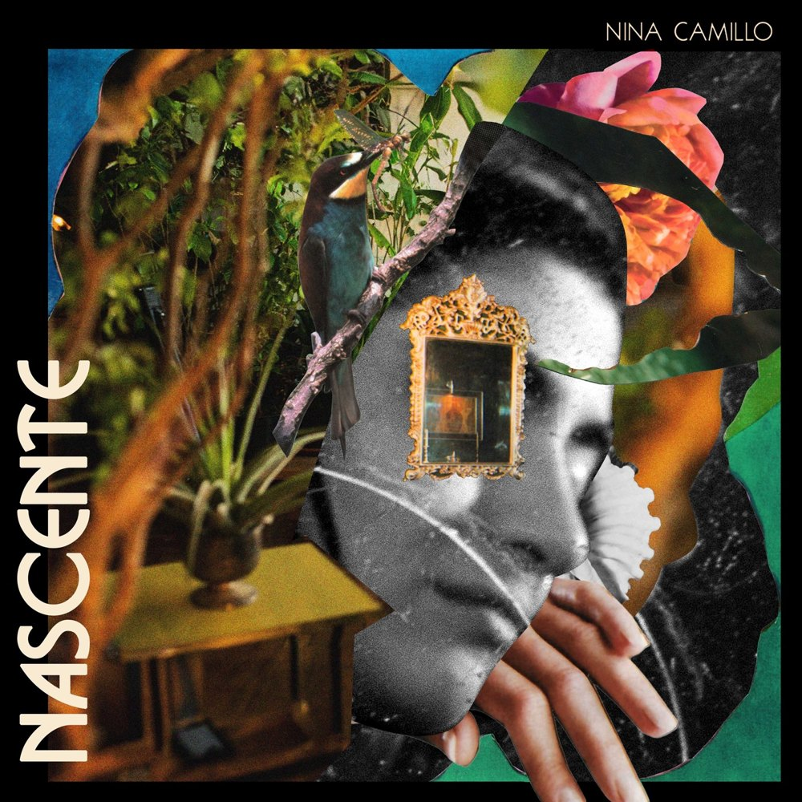
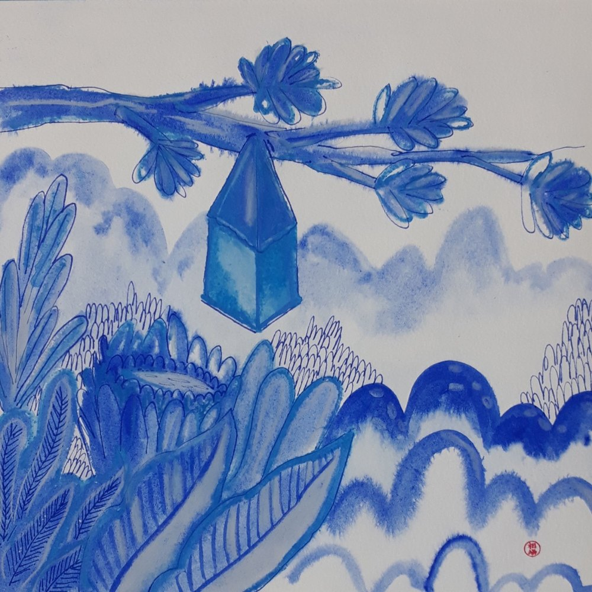
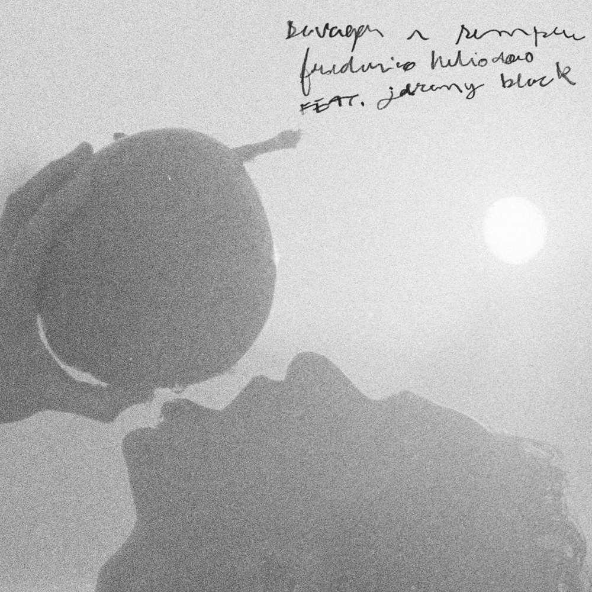
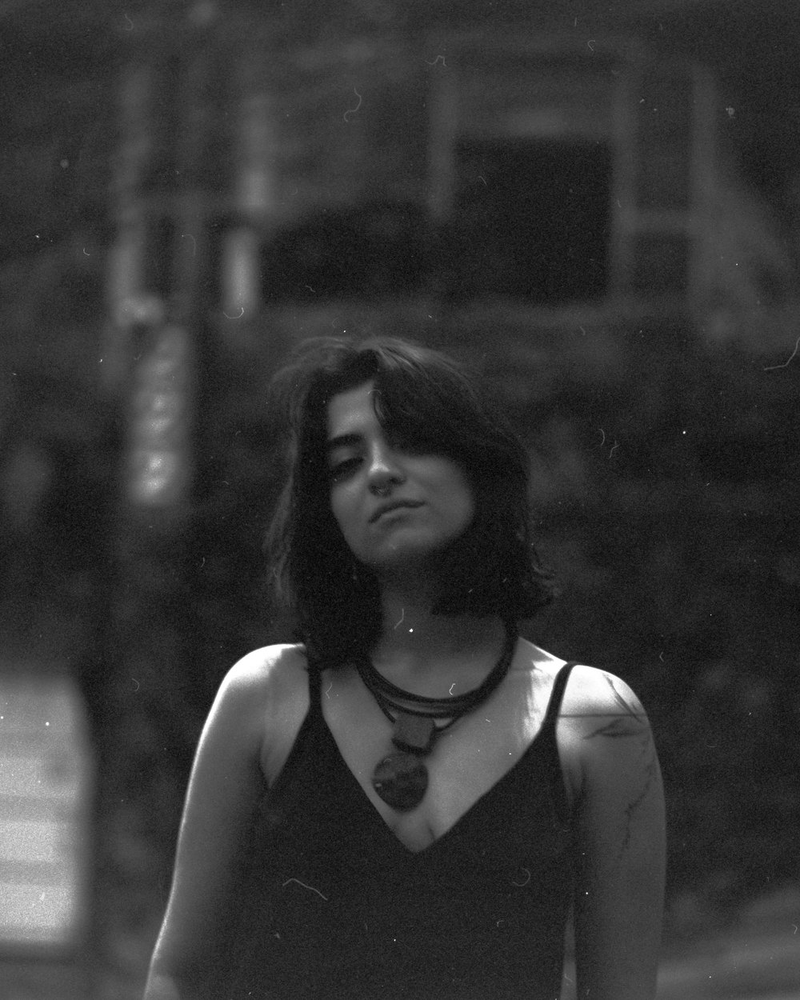

Nascente — EP, 2024
Produção musical por Nina Camillo, co-produzido por Tiago Frúgoli. Lançamento independente.
Ouvir o EP ↗Nina Camillo é cantora, compositora e produtora musical, com atuação em trilha sonora para o audiovisual. Colaborou em produções para Netflix, HBO Max, Disney+ e Prime Video, além de projetos para O Boticário.

Produção musical por Nina Camillo, co-produzido por Tiago Frúgoli. Lançamento independente.
Ouvir o EP ↗
Voz no álbum instrumental de Tiago Frúgoli, com participação nas faixas “Um Domingo”, “Queimando Pontes” e “Hoje”. Selo Pequeno Imprevisto.
Ouvir o álbum ↗
Backing vocals para o single de Frederico Heliodoro e Jeremy Black.
Ouvir o single ↗
Nina Camillo é cantora, compositora e produtora musical, natural de Campo Grande (MS).
É formada em Produção Fonográfica pela Belas Artes e bacharel em Música Popular pela Faculdade Santa Marcelina. Sua relação com a música começou na infância, no projeto Crianceiras – Manoel de Barros, em que deu voz à canção “O Menino e o Rio”.
Em 2024, lançou seu primeiro EP, Nascente, com seis faixas que transitam entre a MPB, o jazz e o neo soul. O trabalho teve destaque no Bandcamp Weekly, no Sounds and Colors e no perfil @Somewhere_Soul. No mesmo ano, apresentou-se no Tranquilo São Paulo e no Sofar Sounds, e foi selecionada pela Groover para tocar no Festival Hacktown.
No mesmo período, atuou como assistente e produtora no estúdio Ambulante, de Beto Villares, contribuindo na criação de trilhas sonoras para produções como Maria e o Cangaço (Disney), Pssica (Netflix), Cidade de Deus: A Luta Não Para (HBO), Cangaço Novo (Prime Video), O Diário de Pilar na Amazônia (Disney) e Funk (Paris Filmes). Também colaborou com a Pipoca Sound na edição dos audiolivros do ABZ do Ziraldo.
Em 2025, foi premiada no Prêmio Profissionais da Música como Produtora Musical do Centro-Oeste, com a faixa “Bem Te Vi”.